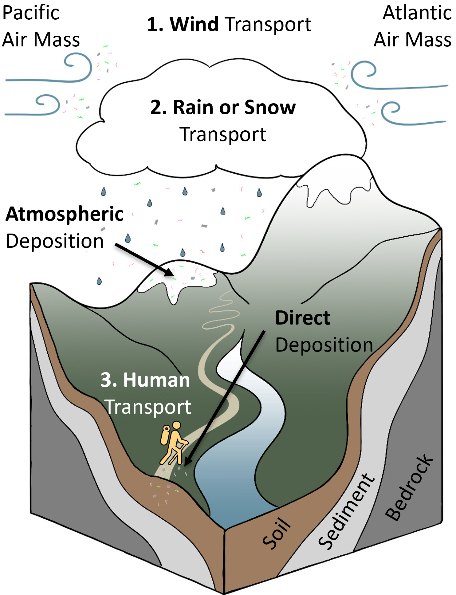
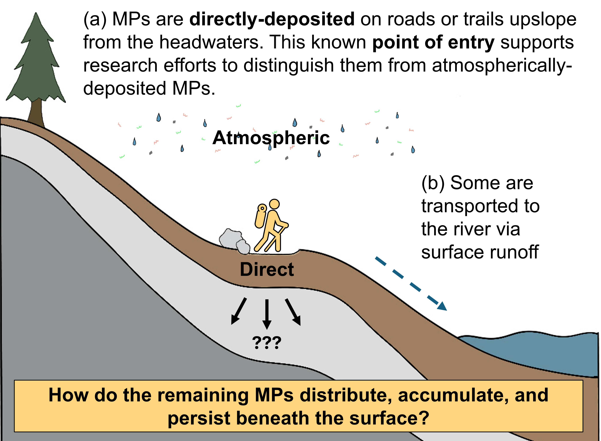
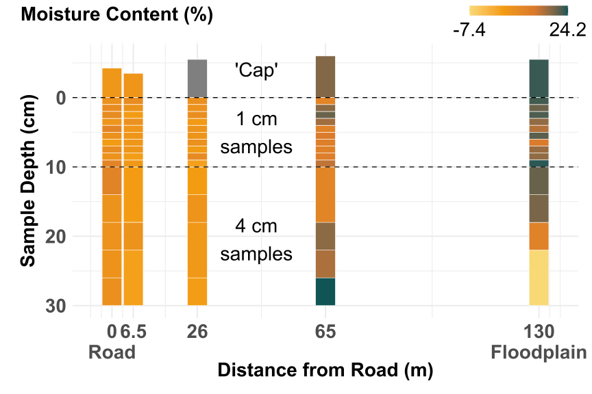
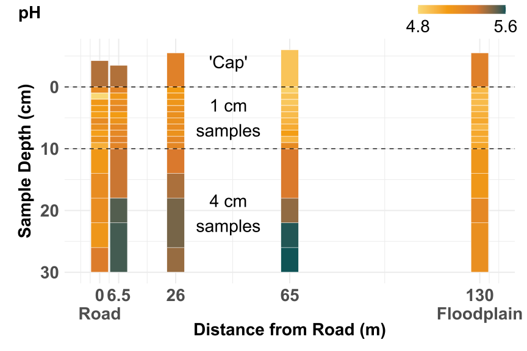
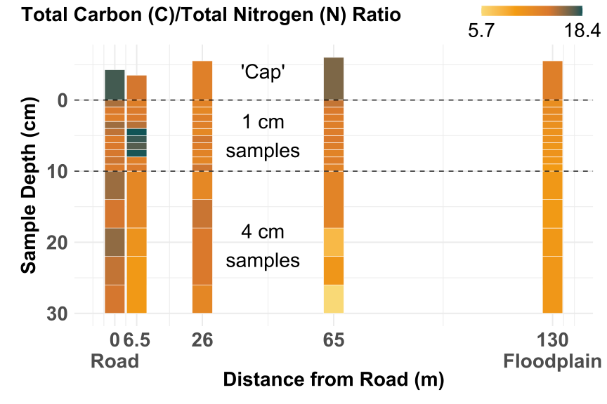
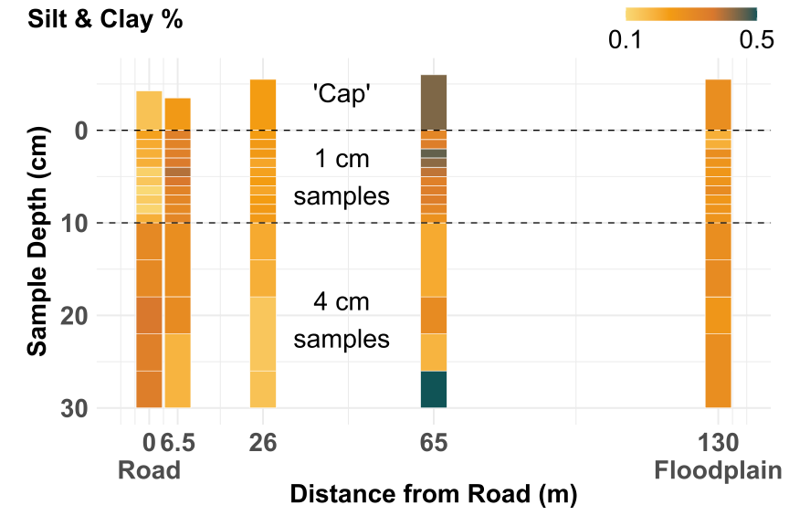
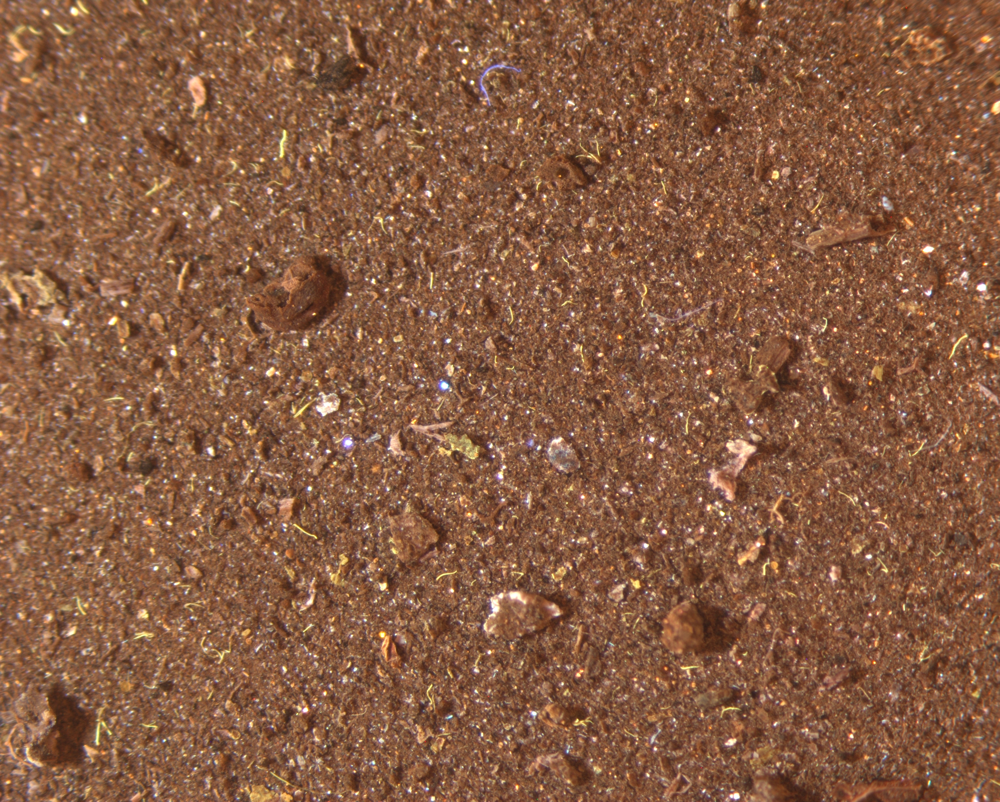

Research
I study the subsurface dynamics of microplastic in soil near U.S. headwater sites.
Why the big fuss about microplastics?
First, let’s define the term ‘microplastic.’
Small plastic particles are typically classified as nano- or micro-plastics based on their size. Nanoplastics are particles of <=1 \(\mu\)m (micron/micrometer), while microplastic particles can range 1\(\mu\)m to 5 mm. These particles are further categorized by how they are created. They are referred to as “primary” if they were intentionally manufactured in the nano to micro size range of 1\(\mu\)m to 5 mm (e.g., beads for jewelry, plastic abrasion additives in cosmetics, exfoliants, or face wash). Whereas, “secondary” nano- or micro-plastics are the result of mechanical or chemical breakdown of larger plastic items in the environment (e.g., medical supplies, laundry detergent bottles, water bottles, etc.)1.
Are they harmful?
Yes. Studies have shown that microplastic (MP) contamination can reduce nutrient absorption when ingested and result in contamination hot spots due to other harmful contaminants adsorbing to their surface (e.g., heavy metals, pesticides, pharmaceuticals and pathogens).
What do we [not] know about them?

Diagram of three dominant microplastic (MP) deposition mechanisms in remote, mountainous headwaters (e.g., Rocky Mountains, Colorado, USA).
Humans first discovered the Great Pacific Garbage Patch in 1997, which led to extensive microplastic research in the marine environment. We have now found them in the deepest parts of our oceans (e.g., Mariana Trench), the most remote mountain tops, and on glaciers. They are, as the literature emphasizes, ubiquitous. Microplastics have been found in every corner of our planet, even in places previously never visited by modern humans. This has led to work in recent years to determine how those plastic particles have reached these remote regions of the world. More recently, scientists have begun modeling the atmospheric transport of microplastic contamination via wind, rain, and snow.
Despite this incredible progress, we still know very little about how microplastics behave in soil2.

How am I addressing it?
This study examines subterrestrial MP distribution and accumulation controls near headwater sites of major U.S. river systems by:
Quantifying and characterizing microplastics in finely, vertically sampled soils to determine the predictors and spatial continuity of microplastic distribution
Using 7-Be and 210-Pb radiometric dating to construct a model for microplastic accumulation over time
We established a transect from a dual-use road/ trail downslope to the Cache La Poudre River in northern Colorado and collected 25 soil cores across five sites. We also excavated three soil pits and deployed a passive atmospheric dust collector. MPs are being isolated by density separation, grains characterized with a Dynamic Image Particle Analyzer, and soil properties quantified (e.g., moisture, organic matter, and texture).


What have I learned so far?
In Fall 2025, my work focused on understanding common soil properties that may ultimately influence microplastic distribution. These include soil moisture, pH, electrical conductivity (EC), soil organic matter (SOM) content via Total Carbon/Total Nitrogen, and soil texture via hydrometer. The resulting distributions ar displayed below; interpretation is forthcoming. Microplastic analysis, radiometric dating, as well as grain size and grain shape distribution assessment via Dynamic Image Analysis will occur in Spring 2026.
Soil Moisture
Soil moisture helps us infer the impact of water as a transport medium for microplastics in soil. Water flow is believed to carry microplastics deeper into the soil profile, altering their distribution patterns.

pH
pH is a primary control on soil and microplastic mobility within the soil. Alkaline soils are generally more negatively charged, which can create repelling forces between the soil and aged microplastics (also becomes more negatively charged with age).

Total Carbon/Total Nitrogen Ratio
The Total Carbon/Total Nitrogen Ratio (C/N) can provide insights into a soil’s capacity to retain or mobilize microplastics. It is a reflection of soil organic matter (SOM) quality and microbial activity, which impacts the microplastic’s ability to attach or detach from the material around it.

Soil Texture
It is well established that soil texture plays a vital role in microplastic movement. Fine soils can trap microplastics effectively, while coarse-grained soils with larger pore spaces allow faster water and microplastic movement.

What’s next?

Image of isolated microplastics at 17.2x zoom. Microplastics have been treated with DANS to fluoresce.
Grain size and grain shape analysis (via DIA)
Microplastic quantification and characterization using Fourier Transform Infrared spectroscopy
Multi-variate regression to evaluate predictors of MP distribution
Characterization of spatial continuity
Construction of a model for MP accumulation over time
Acknowledgments
I would like to thank the following organizations and individuals for making this interdisciplinary research possible.
Our wonderful field team of enthusiastic, hard-working volunteers: [Undergraduate] Molly Thayer, Michelle Leonard, Ferrah Jackson, Sophia Caunt, and Caroline Caravan; [Graduate] Rachel Bernstein, Noah Caldwell, Helen Flynn, and Ashlesha Khatiwada; [External] Jason Ford and Molly Gielas. Generous financial supporters: Quaternary Geology & Geochronology (QG&G) Division of the Geological Society of America (GSA), 2025 Marie Morisawa Award; Colorado Scientific Society (CSS), Student Research Grant. Collaborators: Dr. Nicholas Perez, Associate Professor, Department of Geology and Geophysics and Justin Smolen, M.S., Assistant Director, Laboratory for Synthetic-Biologic Interactions, Texas A&M University; Dr. Brandon McElroy, Professor, Department of Geology and Geophysics, University of Wyoming; Dr. Joshua Landis, Principal Research Scientist, Fallout RadioNuclide Analytics Lab Earth and Planetary Sciences, Dartmouth College; CSU’s Analytical Resource Center (ARC), and CSU’s EcoCore Soil Processing Lab.
References
[1] Tirkey, Anita, and Lata Sheo Bachan Upadhyay. “Microplastics: An Overview on Separation, Identification and Characterization of Microplastics.” Marine Pollution Bulletin 170 (September 2021): 112604. https://doi.org/10.1016/j.marpolbul.2021.112604.
[2] Iwanowicz, Deborah D., Austin K. Baldwin, Larry B. Barber, et al. “Integrated Science for the Study of Microplastics in the Environment—A Strategic Science Vision for the U.S. Geological Survey.” In Circular, No. 1521. U.S. Geological Survey, 2024. https://doi.org/10.3133/cir1521.
[3] Landis, Joshua D. “Age-Dating of Foliage and Soil Organic Matter: Aligning 228Th:228Ra and 7Be:210Pb Radionuclide Chronometers over Annual to Decadal Time Scales.” Environmental Science & Technology 57, no. 40 (2023): 15047–54. https://doi.org/10.1021/acs.est.3c06012.